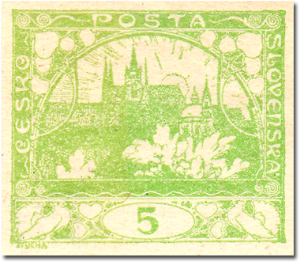
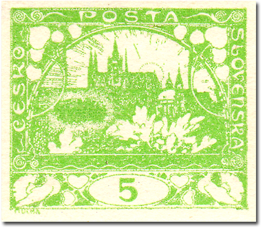
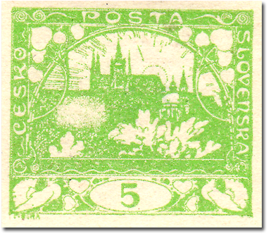
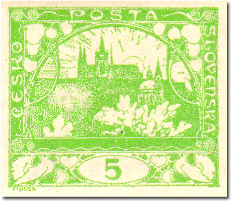
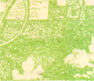
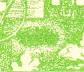
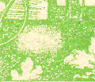
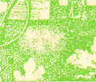

5h light green – spot at 27/2 (the “zeppelin”)
A very well-known smear occurs on the 5h light green (POFIS no. 3), stamp field 27/2. Collectors call this popular smear the “zeppelin”, and it occurs quite often.
As described in the introduction to Smears and spots, this production flaw was caused by a foreign object sticking to the plate during printing. What makes 27/2 interesting is that you can see the very first state, when the object is on the plate and the ink adheres to it – a green spot with a white border. The next phase is a white spot only: the object came off, but the plate stayed greasy at that place. The smear gradually shrank over time.




Detail of the development of the flaw:



